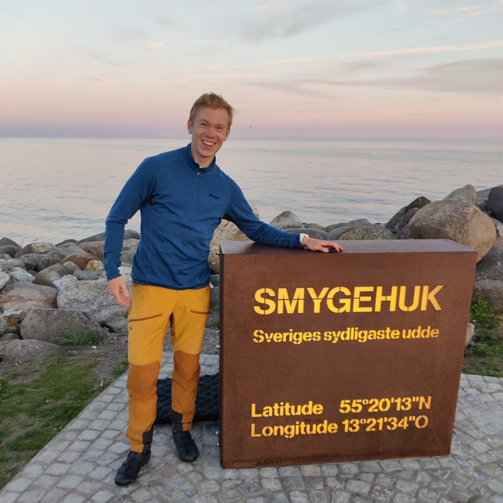
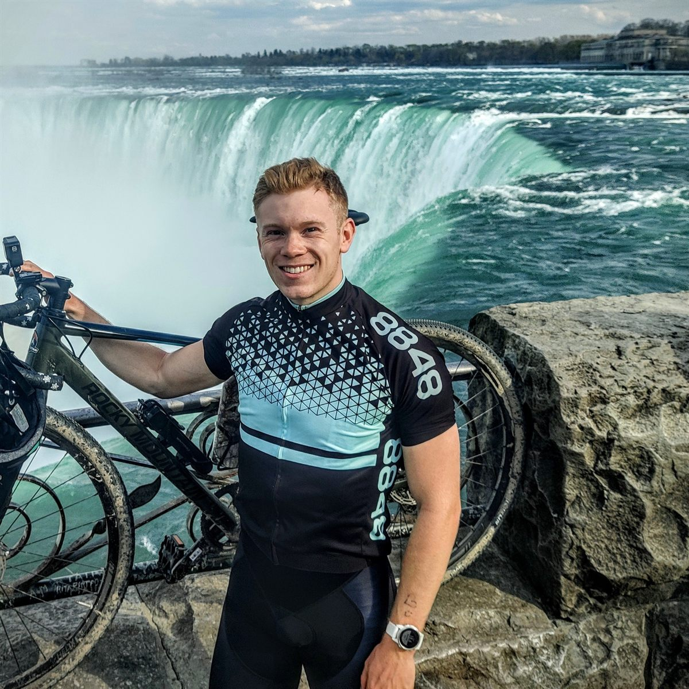

// Bikepacking Journal
My first long-distance bikepacking adventure.
A summer bikepacking trip through Scandinavia. I rode through the Swedish west coast up through the hilly inlands to Abisko, finishing the trip with a detour to the Lofoten archipelago.
// The routes